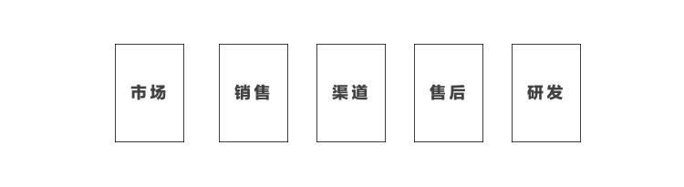

现代企业中的政治问题到底是怎么产生的，对政治的经典定义是「一群有组织的群体对于某个位置（Position）的实现和保护」——这样的定义在企业中也存在，组织变成了有种相同商业目标的部门，位置变成了企业价值链中的一环，实现和保护成为部门生存和成长的必要。
从基本逻辑上来看，部门的生长若是必然，那么一旦商业目标发生了变化或模糊、位置发生了变化，部门的「政治警报」必然拉响，因其关乎部门是否能存在。
旧秩序
这种不确定性带来的结果必然是对「旧秩序」的怀念，包含曾经的商业目标和位置，对新的秩序产生抵触情绪，部门之间的隔阂斗升。
「旧秩序」来自于企业几十年来的沉淀而最终形成的组织内关系，Zebes（化名）公司世界最优秀的游艇制造商，他们的高端游艇成为世界精英人士的首选，成立80年来，Zebes已经建立好了稳定的企业架构：

虽然经历了一些变化，市场、销售、渠道、售后、和研发五大事业群基本上在几年里已经保持稳定。
数字化的伊始
为了拥抱数字化的市场趋势，游艇的购买者也出现了年轻化趋势，自己旗下的产品线也开始越来越丰富，Zebes首先在市场部门展开了「数字营销Digital Marketing」的计划，通过两年的努力，市场部门建立了一支优秀的数字营销团队，他们的数字内容通过邮件、社交网络、网站等各种方式传播。
在赢得了几次「数字化」媒体大奖之后，整个企业开始了轰轰烈烈的数字化运动，几乎在一夜之间，几乎每个事业群开始建立自己的消费者渠道，通过数字化的方式和客户进行互动。
「小家伙」
在最新一次董事会会议中，公司决定成立一支「数字体验」团队，归于售后事业群管理，彻底执行公司的数字战略。
这支全新的团队，成为了稳定结构里的「不稳定」因素。团队领导者认为「数字体验」是不分市场、销售、渠道、和售后的，所有数字渠道都应该是这些功能的集合，在一起部门例会时，他说：「端到端和无缝连接的客户体验是我们的目标」。
在数字咨询公司的帮助下，部门迅速扩大，招募了各种数字人才，遵循小而精、全功能的理念，加上外部供应商的支持，数字体验团队成为组织的红人，问题也开始显现。
第一次冲突
导火索是「用户研究团队」的产生，用户研究在这个组织里，从来都是市场部门的职责，其他所有部门需要用户研究，都通过提需求的方式找到市场部门。而2015年夏季的一场国际游艇展上，数字体验团队的「用户研究团队」遇上了市场部门的「用户研究团队」。
面面相觑之后，市场部门开始警惕这个组织里的「小家伙」，在随后几日的展会中，他们要求「小家伙」们不能以Zebes的名义进行调研。
市场部门又在几次场合下感受到「数字体验」团队的挑战，在私底下市场部门的员工都在议论：「我们才是最了解客户的！」。
「小家伙」也有失误的时候，因为没有好的内容制作能力，自己的渠道也不够丰富，他们花钱在另一个渠道上进行了新的数字服务的宣传，因为渠道的选择和内容没有经过市场部门审核，遭到了市场部门严厉的批评。
市场部门的政治警报
这次冲突在各个部门之间闹得沸沸扬扬，市场部门突然发现，自己突然位于一个极为危险的位置——各个部门都在思考建设自己的数字渠道，例如研发部门开始在游艇内放置联网的数字屏幕，直接和客户发生互动。
市场部门在一次调查中发现，原来自己掌握的5个社交网络账号就是企业所有数字渠道，而现在这个数字变成了25个，有20个不在自己手上。
市场部门的政治警报上升到了最高级别，大家开始焦虑自己的定位到底是什么——「我们曾经掌握着企业所有的数字渠道，也是最好的内容生产商，现在这是怎么了？」这样的焦虑使得他们开始抵触，拼命想回到「旧秩序」中，于是他们通过「品牌不合规」的方式为其他部门的数字计划制造障碍，或者消极提供内容资源，对于消费者而言，突然出现那么多内容质量不一致的数字渠道，表示有些奇怪。
IT部门的政治警报
另一处的政治警报也被拉响，因为鼓励数字创新，各部门都被降低了预算申请难度，这使得每个部门背后都出现了各自的数字化合作方（Digital Vendor），这些合作方都希望在数字化领域完成一次大单。
IT部门意外地发现，光游艇外观数字展示这一个需求，在2016年就做了7遍，而只有一个经过了他们。当剩下6个游艇外观展示的数字项目挨个摆在他们面前，并要求他们维护的时候，IT部门突然发现，以前所有研发需求都由他们管理，现在全变成了各自团队外包。
IT部门也拉响了政治警报——「他们随意起项目、不考虑系统复杂度和维护成本，还不考虑安全性，现在这是怎么了？」这样的焦虑使得他们开始抵触，拼命想回到「旧秩序」中，于是他们通过「安全不合规」的方式为其他部门的数字计划制造障碍，或者消极提供技术资源，延长审核时间，对于消费者而言，突然出现那么多体验不一致的数字产品，表示有些奇怪。
所有部门的政治警报
因为数字化转型并没有预想中那么成功，市场和IT部门的警惕使得整个组织效率开始下降，把消费者体验放在首位反而产生了许多问题，在这个背景下，有越来越多的部门开始焦虑于自己的位置，或多或少开始回忆「旧秩序」，这种情绪给曾经的红人「数字体验团队」带来困扰，它觉得自己就像一个被孤立的年轻人，部门墙前所未有地厚实。
一次数字安全漏洞事件的发生成为彻底压倒骆驼的最后一根稻草，某个由「数字体验团队」负责的数字产品出现了严重的客户资料泄漏，最终曾经的数字领袖悻然离开公司，组织级的数字转型告一段落，曾经的数字团队被分拆编入其他部门。
总结经验
然而数字化的趋势不可能停止，在风波过去之后，依然有大量客户希望用数字化的方式与Zebes进行互动。Zebes董事会开始意识到一条他们不曾意识到的逻辑：
- 数字化改变了组织运营的模式；
- 曾经稳定的秩序需要被打破；
- 部门间对各自位置的认定发生变化；
- 对位置的不确定使得部门间怀念「旧秩序」；
- 部门开始使用自己的资源保护「旧秩序」中的位置，而不是通过互动形成「新秩序」；
- 「新秩序」形成失败。
于是，他们建立了「新秩序委员会」，这个秩序委员会的重要职责是在「数字化转型」中帮助各个部门：
- 重新定位：避免因为定位不明确拉响政治警报；
- 分化资源：减少优势部门对于资源的控制，降低其「复辟」的能力，必要的时候，进行拆分。
市场部门被拆分出独立的数字营销团队和内容团队，前者专注进行数字营销，后者专门根据需要为其他部门提供优质的数字内容；同时用户研究团队反而被拆分到若干个业务部门的数字化团队里。
只有渠道和售后部门建立专门的数字化团队，前者帮助经销商提升数字化能力、后者将售后服务全面数字化。
而IT部门的定位被定义成「数字化内部服务商」，预算被分为两块，一块用于相对稳定的大系统、基础设施建设，有较严格的内审；一块是数字化预算，需要更快的审批过程。同时IT部门也成为数字化能力的孵化中心，通过输出数字人才，让各部门的数字实践开始思考运营需求和产品管理等。
「新秩序委员会」同时对组织内部的「数字冲突」开始进行仲裁，并从跨渠道、技术演进、客户统一体验的角度对数字投资进行合理组合。「新秩序委员会」采用轮值主席的方式，直接向企业董事会进行汇报。
新秩序
有人专门负责对转型过程中的部门解释新的定位，加上一些更加激进的重组，部门开始不再焦虑自己的位置，也不像以前那样有能力保护，冲突开始慢慢减少。
因为市场研究的职责被打散到各个部门中，市场部门也不再把自己当成「最了解客户的人」，而是重点发展自己的内容建设能力，帮助其他部门拓展各自的数字渠道。
新秩序中开始出现了新的企业互动行为，新版的KPI被发布，逐渐，数字转型背景下的稳定的全新秩序开始逐渐形成，各部门开始建立各自的数字能力、并开始互动，虽偶尔出现冲突，「新秩序委员会」也能有效解决，对于客户来说，反而看到的是Zebes这一品牌的统一体验，而不是某一个业务部门。
写在最后
当然，这是一个虚构的故事，但在过去几年的咨询过程中，似乎每个企业在数字转型中都要经历「怀念旧秩序」的震动期。
新秩序不可能通过管理者的振臂一挥就能实现，作为优秀的数字领导者，应该深入了解现有秩序中，部门对自己位置的认同和底线，以及现有资源。
前者是为了协调和保护、后者是为了进行必要时的弱化或整合，以保证因为定位和资源引起的部门墙，不成为组织数字变革的阻碍。